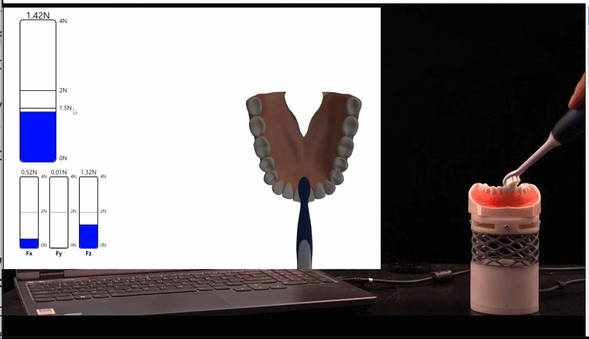

2025 Journal Article
Teaching oral care via vision-based deformation perception

Summary
This study presents a novel, cost-effective sensor platform based on Vision-based Deformation Perception for community oral health education. The system integrates a 3D-printed thermoplastic polyurethane soft structure with a rigid resin frame and an ArUco marker to encode interaction information, including the contact region and six-dimensional force and torque.
Full abstract to be added.
Links
BibTeX
Download .bib@article{Dong2025VBDeformP,
title = {{Teaching oral care via vision-based deformation perception}},
author = {Chengxiao Dong and Xuanyi Dai and Yu Pan and Wanghongjie Qiu and Sen Li and Tianyu Wu and Yijie Jin and He Wang and Chaoyang Song and Fang Wan},
journal = {Soft Science},
year = {2025},
volume = {5},
number = {3},
doi = {10.20517/ss.2025.14},
pages = {36},
url = {https://www.oaepublish.com/articles/ss.2025.14}
}